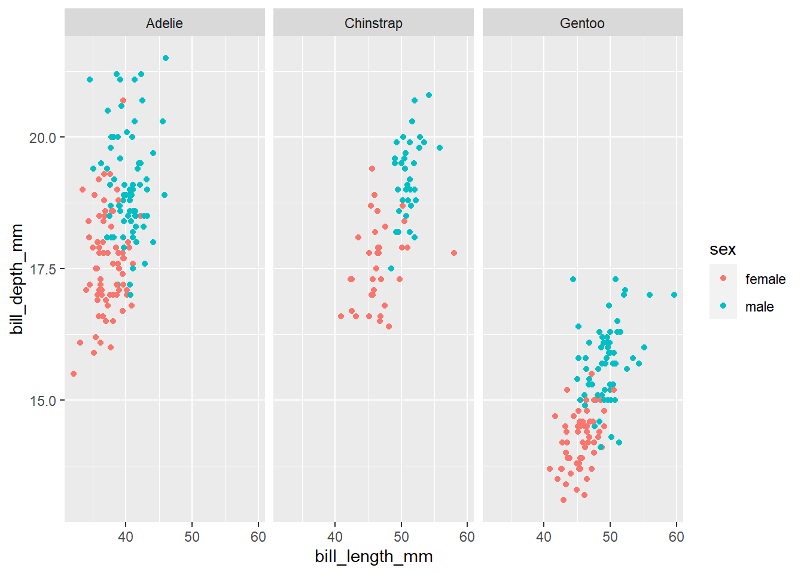
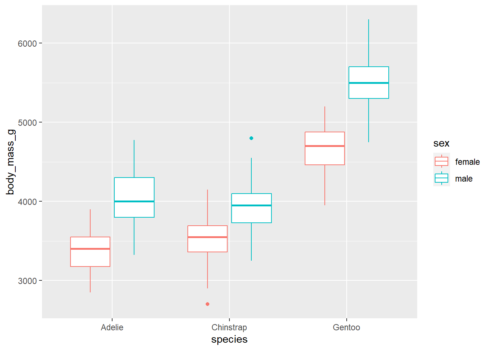
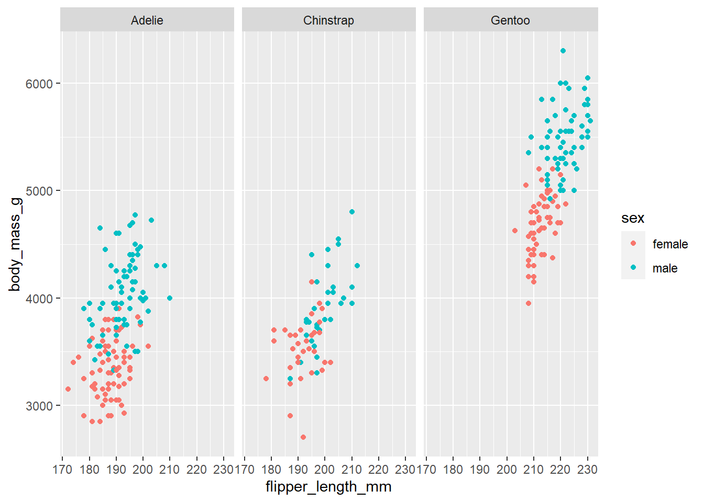
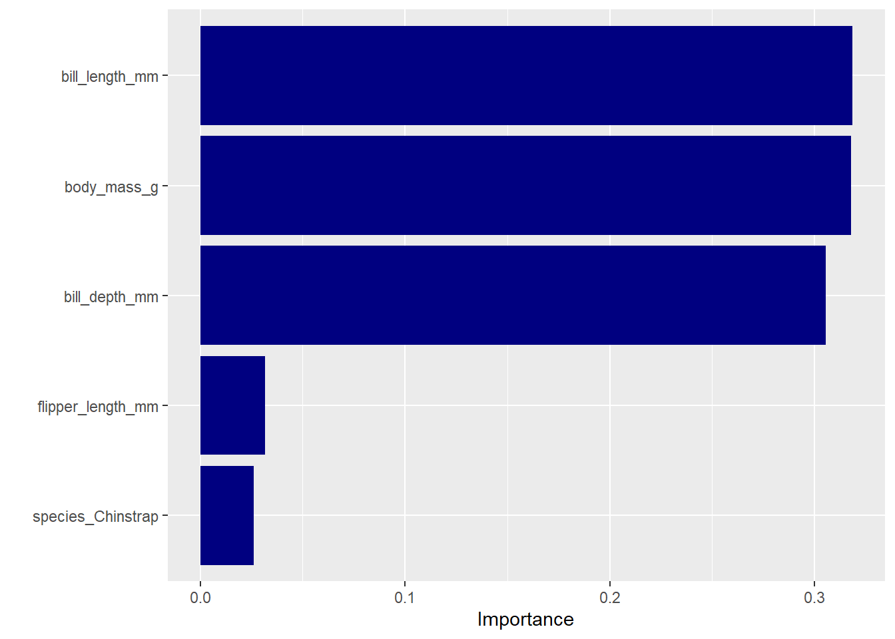

library(tidyverse)
library(tidymodels)
library(palmerpenguins)
library(vip)This time, we will build a XGboost model to classify the gender of palmer penguins dataset. We also gonna use resampling method to measure how well our model performance.
Load library
Dataset
penguin_df <- penguins
glimpse(penguin_df)Rows: 344
Columns: 8
$ species <fct> Adelie, Adelie, Adelie, Adelie, Adelie, Adelie, Adel…
$ island <fct> Torgersen, Torgersen, Torgersen, Torgersen, Torgerse…
$ bill_length_mm <dbl> 39.1, 39.5, 40.3, NA, 36.7, 39.3, 38.9, 39.2, 34.1, …
$ bill_depth_mm <dbl> 18.7, 17.4, 18.0, NA, 19.3, 20.6, 17.8, 19.6, 18.1, …
$ flipper_length_mm <int> 181, 186, 195, NA, 193, 190, 181, 195, 193, 190, 186…
$ body_mass_g <int> 3750, 3800, 3250, NA, 3450, 3650, 3625, 4675, 3475, …
$ sex <fct> male, female, female, NA, female, male, female, male…
$ year <int> 2007, 2007, 2007, 2007, 2007, 2007, 2007, 2007, 2007…Viz the dataset
From the visualization, we can say that male penguin bigger than female penguin in terms of body mass and flipper lenght.
penguin_df <- penguin_df |>
drop_na(sex) |>
select(-year, -island)
penguin_df |> ggplot(aes(bill_length_mm, bill_depth_mm, color = sex)) +
geom_point() +
facet_wrap(~species)
penguin_df |> ggplot(aes(species, body_mass_g, color = sex)) +
geom_boxplot()
penguin_df |> ggplot(aes(flipper_length_mm, body_mass_g, color = sex)) +
geom_point() +
facet_wrap(~species)
Build a model
Before we build model, we split the data into training set and testing set. After that, we use resampling method called V-fold cross validation (CV) and build a xgboost model. For preprocessing, we impute the missing data with median and then normalize the numeric predictors and create dummy variable for categorical predictors.
set.seed(99)
penguin_split <- initial_split(penguin_df, prop = 0.7, strata = sex)
penguin_train <- training(penguin_split)
penguin_test <- testing(penguin_split)
penguin_fold <- vfold_cv(data = penguin_train, strata = sex)
bt_spec <- boost_tree() |>
set_mode("classification") |>
set_engine("xgboost")
penguin_recipe <- recipe(sex ~ ., data = penguin_train) |>
step_impute_median(all_numeric_predictors()) |>
step_normalize(all_numeric_predictors()) |>
step_dummy(all_nominal_predictors())
penguin_wf <- workflow() |>
add_recipe(penguin_recipe) |>
add_model(bt_spec)
bt_fit <- penguin_wf |> fit_resamples(resamples = penguin_fold, control = control_resamples(save_pred = TRUE))Evaluating the model
As we can see, there are 10 results created from the resampling. Last, we fit the test data and evaluate the model with accuracy and ROC, also create confusion matrix
collect_metrics(bt_fit, summarize = FALSE)# A tibble: 20 × 5
id .metric .estimator .estimate .config
<chr> <chr> <chr> <dbl> <chr>
1 Fold01 accuracy binary 0.917 Preprocessor1_Model1
2 Fold01 roc_auc binary 0.986 Preprocessor1_Model1
3 Fold02 accuracy binary 0.875 Preprocessor1_Model1
4 Fold02 roc_auc binary 0.892 Preprocessor1_Model1
5 Fold03 accuracy binary 0.958 Preprocessor1_Model1
6 Fold03 roc_auc binary 0.972 Preprocessor1_Model1
7 Fold04 accuracy binary 0.917 Preprocessor1_Model1
8 Fold04 roc_auc binary 0.993 Preprocessor1_Model1
9 Fold05 accuracy binary 0.875 Preprocessor1_Model1
10 Fold05 roc_auc binary 0.917 Preprocessor1_Model1
11 Fold06 accuracy binary 0.913 Preprocessor1_Model1
12 Fold06 roc_auc binary 0.970 Preprocessor1_Model1
13 Fold07 accuracy binary 0.913 Preprocessor1_Model1
14 Fold07 roc_auc binary 0.962 Preprocessor1_Model1
15 Fold08 accuracy binary 0.909 Preprocessor1_Model1
16 Fold08 roc_auc binary 0.959 Preprocessor1_Model1
17 Fold09 accuracy binary 0.909 Preprocessor1_Model1
18 Fold09 roc_auc binary 0.983 Preprocessor1_Model1
19 Fold10 accuracy binary 0.955 Preprocessor1_Model1
20 Fold10 roc_auc binary 1 Preprocessor1_Model1penguin_final <- penguin_wf |>
last_fit(penguin_split)
collect_metrics(penguin_final)# A tibble: 2 × 4
.metric .estimator .estimate .config
<chr> <chr> <dbl> <chr>
1 accuracy binary 0.901 Preprocessor1_Model1
2 roc_auc binary 0.960 Preprocessor1_Model1result <- collect_predictions(penguin_final)
result |> conf_mat(sex, .pred_class) Truth
Prediction female male
female 41 1
male 9 50penguin_final |>
extract_fit_parsnip() |>
vip(aesthetics = list(fill = "navy"))